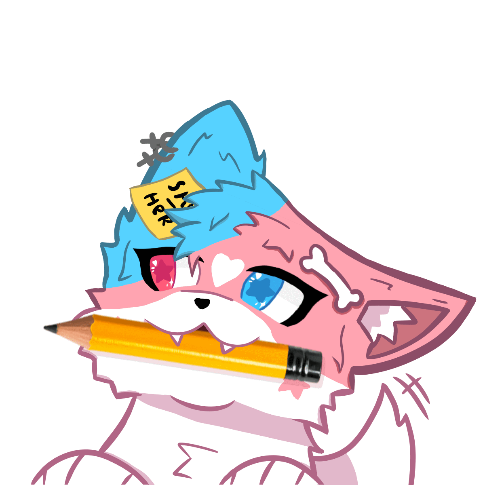

// find me here
socials
one clean list, every platform, no guessing which icon is which.

socials.sh
psst — the code behind these three pages lives in the same repo this site is hosted from. peek at the source.